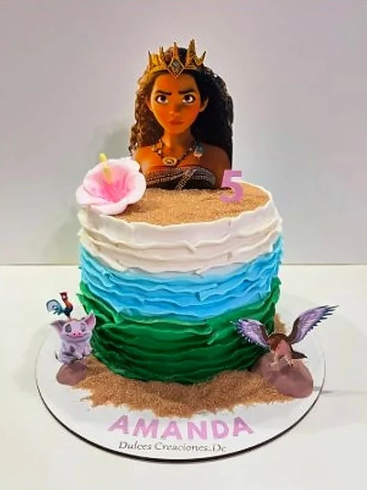
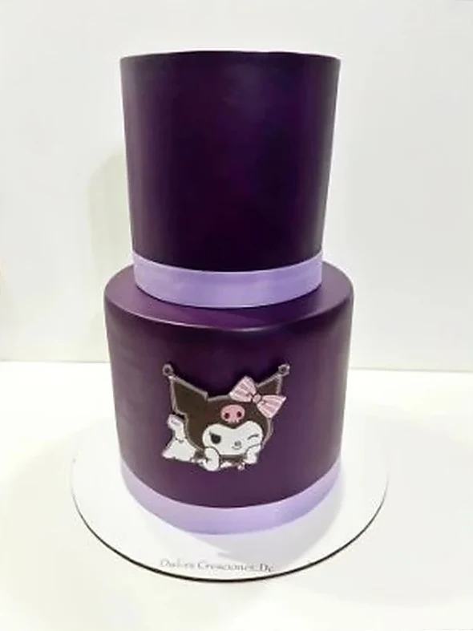
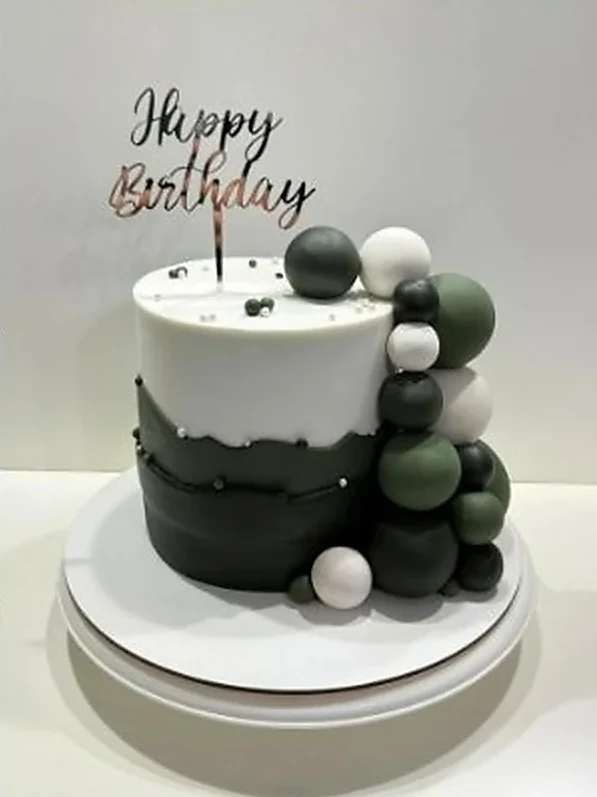

Personajes y universo visual
Moana, Kuromi, Disney, Sanrio o la idea que tengas guardada. Trabajamos a partir de referencias reales para respetar estilo, colores y detalles del personaje.
Moana · Kuromi · Disney · Sanrio · Gaming
Temperley · Zona Sur GBA ·
Podemos adaptar personaje, paleta de colores, topper con nombre y cantidad de porciones para que la torta acompañe de verdad el cumple y no sea un diseño genérico.
Moana, Kuromi, Disney, Sanrio o la idea que tengas guardada. Trabajamos a partir de referencias reales para respetar estilo, colores y detalles del personaje.
Sumamos nombre, edad, toppers, mini figuras y terminaciones que hagan que la torta se sienta hecha especialmente para ese nene o nena.
Te orientamos con porciones y formato para un cumpleaños íntimo o un salón con muchos invitados, sin perder estética ni practicidad al momento de servir.
Diseños únicos con los personajes favoritos de tus niños. Moana, Kuromi, Disney y más.





En Dulces Creaciones nos especializamos en tortas infantiles personalizadas para cumpleaños de niños en Temperley y Zona Sur GBA. Creamos diseños únicos con los personajes favoritos de tus hijos: desde las aventuras oceánicas de Moana Disney hasta el estilo kawaii de Kuromi Sanrio.
Nuestras tortas temáticas incluyen personajes Disney, Sanrio, anime, gaming como Fortnite, y cualquier tema que haga feliz a tu niño. Cada torta es elaborada artesanalmente con bizcochuelo de vainilla, chocolate o marmolado, rellenos de dulce de leche, crema o ganache, y decoraciones comestibles personalizadas.
· Retiro en Temperley
Tortas temáticas del océano con Moana, Maui y aventuras polinesias. Decoración con olas, flores tropicales y personajes Disney.
Ideal para niñas aventurerasTortas en tonos negro, rosa y morado con Kuromi, My Melody y la familia Sanrio. Estilo kawaii perfecto para fans de Hello Kitty.
Estilo kawaii japonesTortas temáticas de videojuegos con Fortnite, controles y elementos gaming. Perfectas para niños y adolescentes gamers.
Para gamers y streamersSelecciona el personaje favorito de tu niño: Moana, Kuromi, Disney, anime, gaming o cualquier tema que le encante.
Elegi el bizcochuelo (vainilla, chocolate, marmolado) y los rellenos. Todos con ingredientes de primera calidad.
Las tortas infantiles personalizadas se retiran personalmente en Temperley, Buenos Aires. Coordinamos día y horario para que tu torta esté lista y perfecta para la celebración.
Escribinos y creemos juntos la torta de sus sueños con su personaje favorito
Consultar por WhatsAppSí, somos especialistas en tortas temáticas Disney incluyendo Moana, Frozen, Princesas, Mickey y todos los personajes populares.
Si, realizamos tortas Kuromi, Hello Kitty, My Melody y toda la familia Sanrio con decoracion en colores caracteristicos.
Las tortas se retiran personalmente en Temperley, Buenos Aires. Coordinamos día y horario para que pases a buscar tu pedido listo y en perfectas condiciones.
Agregá Dulces Creaciones a tu pantalla
Accedé rápido a nuestros diseños